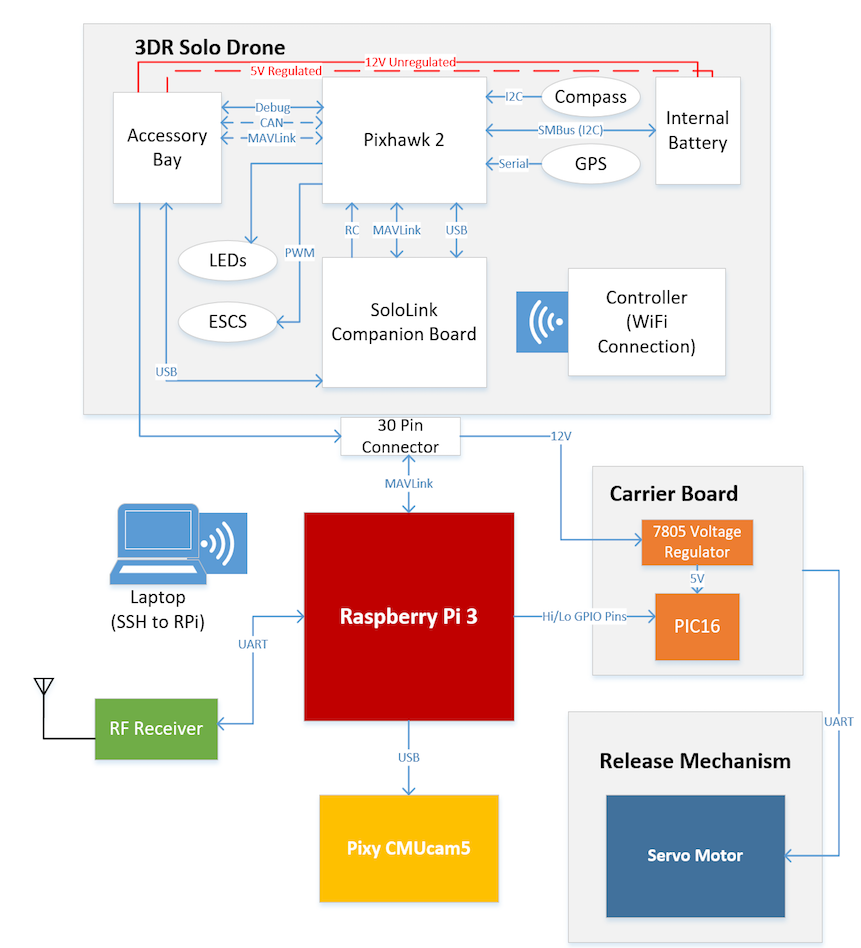
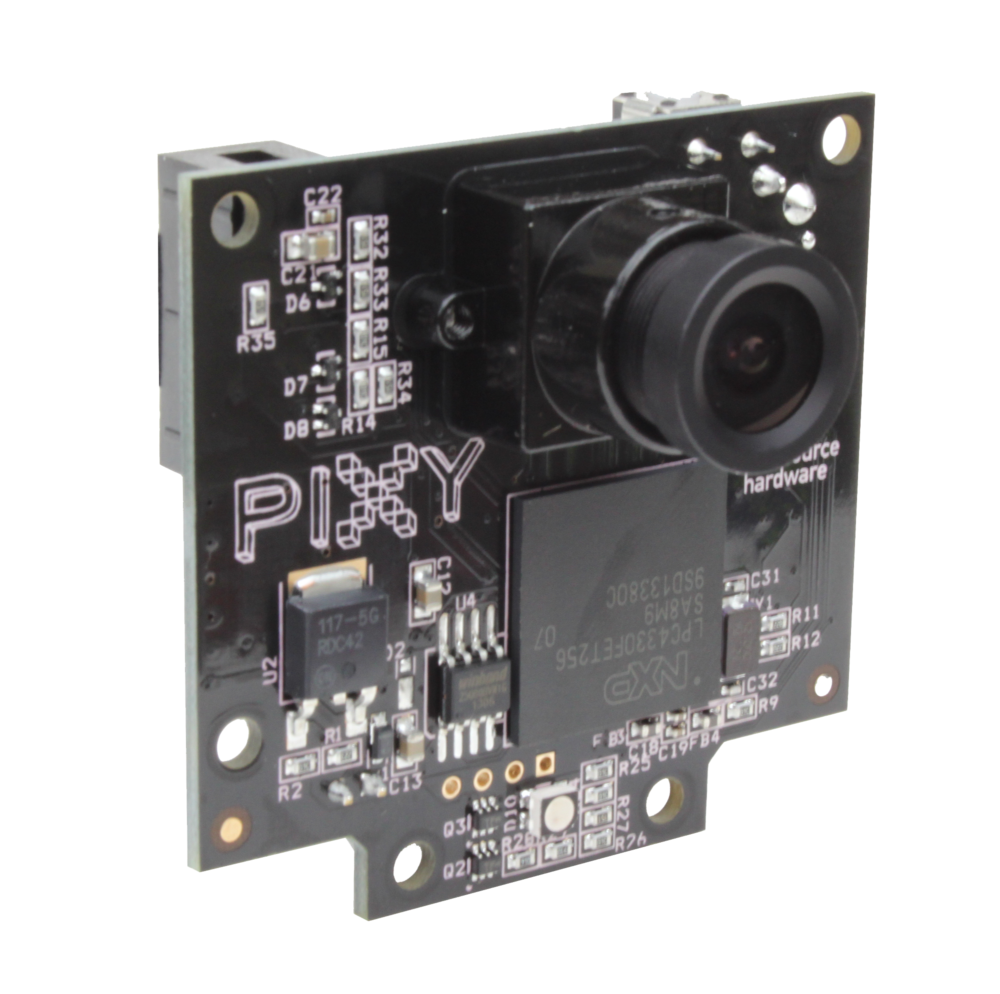
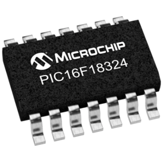
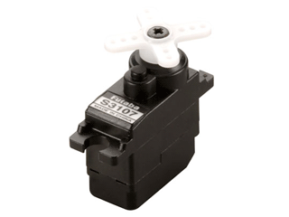
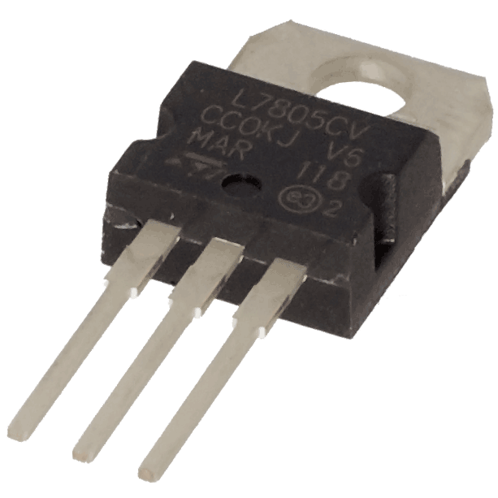

Hardware
3DR Solo Drone
Raspberry Pi 3 (Model B)
Pixy CMUcam5 Vision Sensor
PIC Microcontroller
Futuba Servo Motor
3D-printed Release Mechanism
Voltage Regulator
RF Receiver

3DR Solo Drone

The 3DR Solo Drone is the main chassis of our project. It contains the power supply that will power all the components in our design. The 3DR has a compass and GPS for navigating, electronic speed (ESCS) for controlling the motors of the propellers for flight, and the SoloLink Companion Board and accesory bay for connecting to the other components of this design. It also has th Pixhawk as its flight controller. The external controller is connected via WiFi and will be used in case of emergencies.
Raspberry Pi 3 (Model B) and Carrier Board

The brains of the whole system that process all the navigation and image detection written in Python scrips. The Raspberry Pi (RPi) and Carrier Board will distribute power received from the 3DR Solo Drone and will be the main connection point for all components. The Raspberry Pi 3 is directly attached to the carrier board and will be the brains for our project - receiving.
Pixy CMUCam5

An open-source vision sensor that is capable of detecting the location of the object based on its color. Once, over the waypoint, Pixy cam will then scan the field of view to find for the identified waypoint marker. Then, it will calculate the pixel-to-centimeter ratio based on the actual size of the target.
PIC Microcontroller

Sets the proper PWM signals to rotate the serco motor as to assigned arcs.
Futuba Servo Motor and 3D-Printed Drop Mechanism

The Futuba servo motor is connected to RPi carrier board via servo connection. This motor will rotate exactly 90 degrees to each compartment to release a payload. Attached is an enclosed rotary mechanism that holds the designated payload to be delivered. A PIC microcontroller, commanded by the Raspberry Pi, sends corresponding PWM signals to the servo which rotates the 3D-printed dispenser. Each single rotation will drop a payload at each waypoint once the drone has confirmed its location.
Voltage Regulator

Allows to safely connect to on-board voltage source within drone.
RF Receiver

A small electronic device that receives radio frequency signals from a transmitting beacon.